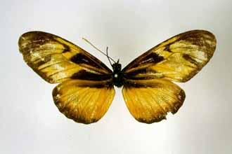
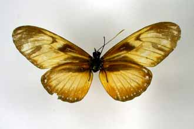

?Hybrid or ?mutant form of Eueides sp.
This female specimen is in the Natural History Museum, London,
and is labelled "New Granada, Hewitson coll., Eueides edias".
A note from Keith S. Brown nearby says it isn't edias, but also that he doesn't know what it is.
Return to "Hybrids .." document
Go to: Mutant
heliconiines
Last updated: 10 October 2002